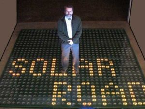

So, you are interested?
That is awesome! To begin with, let us tell where we got the idea from
Summary:
Scott Brusaw and his wife Julie have known each other since they were babies. Scott said he remembered playing with slot cars in the living room and thinking it was a great idea with electric roadways.
Years later when Julie and Scott have married each other, Julie is now an environmentalist and Scott isn't that much in the news is beginning to talk about climate changes every night. So Scott thinks about the slot cars and their electric track so Scott and Julie started designing the solar roadways. While designing the solar roadways, they also talked about all the plastic that isn't going to be used. So they decided that the roadways should be made out of plastic and glass. Scott and Julie also included electric cables to be underground so they could make sure they wouldn't create a fire if they were broken.
They had only one thing in mind at that time and that was to get the word out that there was a company making solar roadways so they started sharing designs and 3d models about the roadways. A couple of years later Scott and Julie have produced the first solar driveway at their own house.